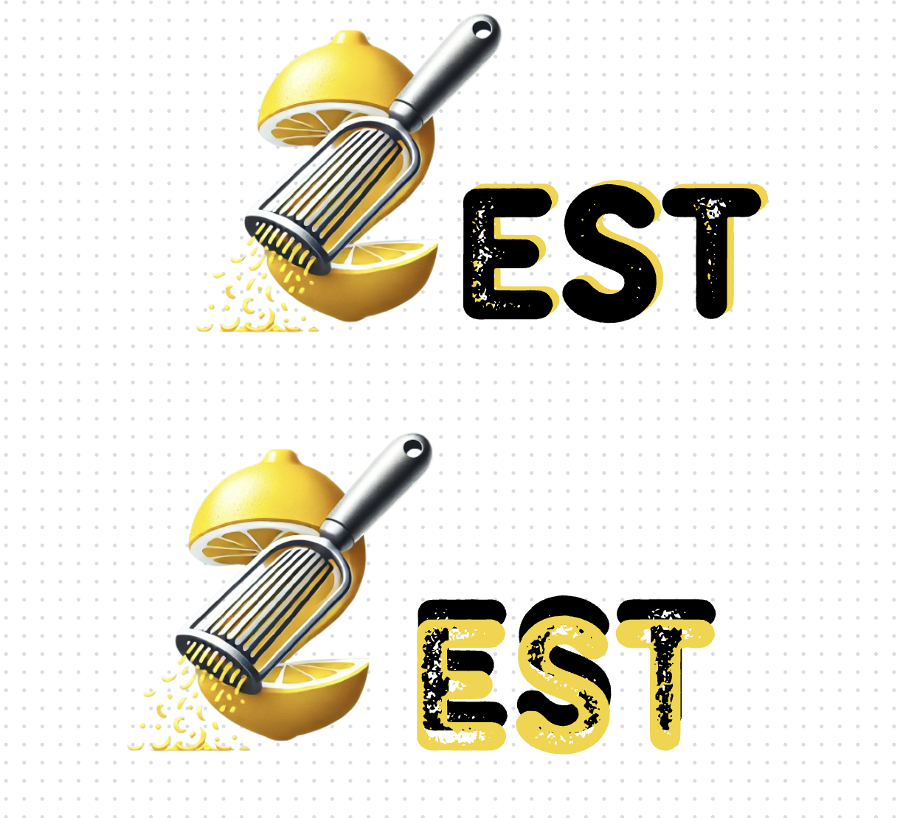
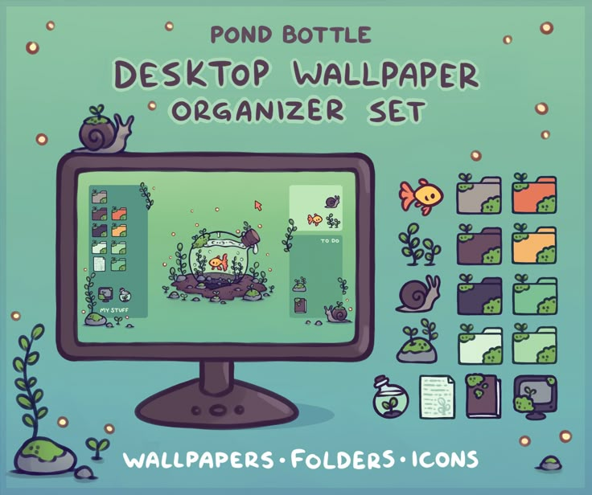
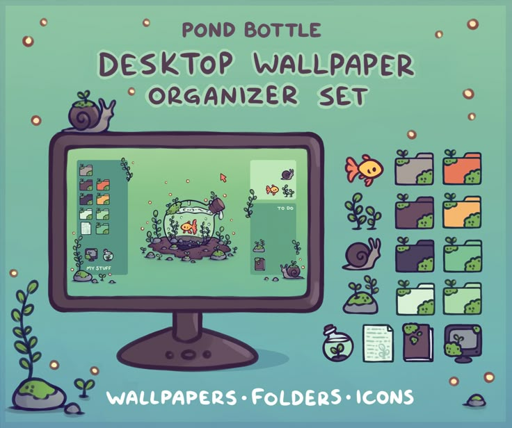
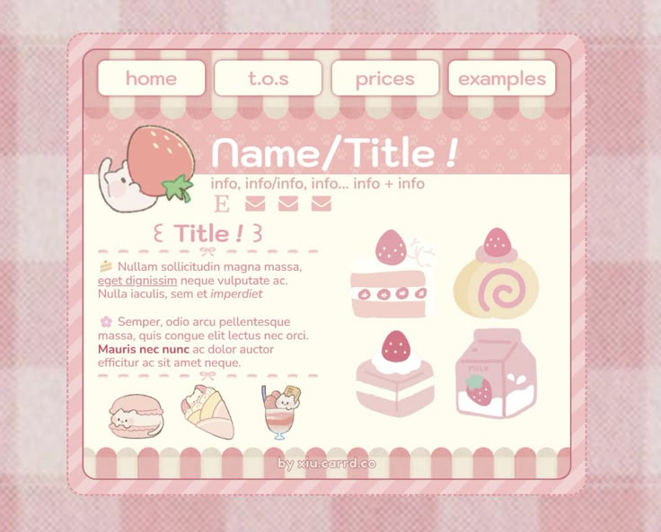
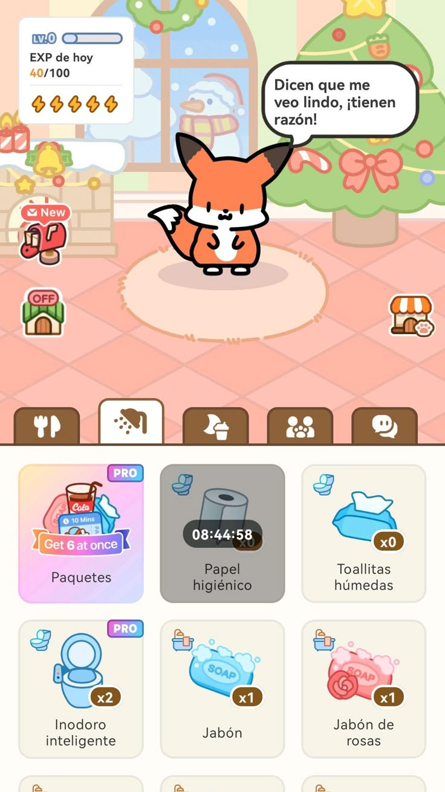
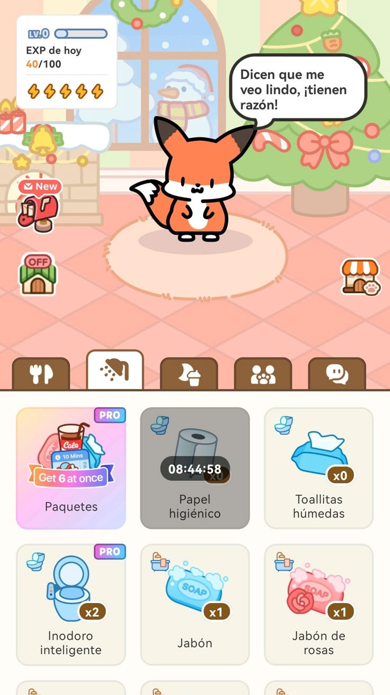

Logo - Design Zest
After coming up with a name for our group I decided to do a logo that is unique and is showing off the "zest" part I looked at logos on pinterest and come up with the idea to make the "z" look like a lemon, make logos woth different shapes to be more simple, or include basically a halt lemon in our logo


After having in mind what I want I startd designing and using also AI to generate me a "z" that look like a lemon. I made several logos ideas and then put them together to gather feedback later on, My first logo was mainly focused on the AI version and i copy pasted the "z" and put it in canva and continued the "est" later with a font that will match the "z". I found it at first good because it showes the peeled lemon and also the design was good , the zester was also there but putting "Design" looked off so I decided to get a feedback from the teacher
I asked Dirk on my logo design and he told me that is too detailed and better make more research on how the nowadays logos look like, he told me also to visualize how it will look in every possible size. Because the logo I created at first when I put in a website it will be small and the details wont be noticable, that will represent more of a "bad design choice"

After the feedback I decided to create more simple logos, something with squares, circles etc. I did a research more in deep and then saw one of my old photos inspirations from pinterest and then i got the idea to place yellow stripes with a form of a lemon and the darker coloured stripes will be the zester, additionally I desided to put the name of the group below the stripes as well, it turned out simple and pretty but I didn't know if people will notice that this is a lemon or if they will recognize our group, so i asked Mikael for a feedback and without having to exmplain he went for that logo and told me that he actually sees the lemo and the zester. The other logos in my opinion were still too detailed or not so representable of the name "design zest"

I realized that not everything needs to be chaotic and to have a lot of details, its important most of the times to have a simple design that a big group of audience can undestand by just looking at it, having feedbacks for iterations also are a big role in making a product
Concept Poster
For the concept poster when i did a research online I saw that mostly people put a lot of text also in annoucment i saw that the teacher sent us a website but all this was with a lot of text something like presentation poster and when I asked my teacher Dirk he said to avoid a lot of text but to make sure still that the concept is clear, so first I did a really simple poster that i asked if its okay and my teacher said that its okay but not a lot detailed and that its not really understandable for who is the app made, so then I decided to give everyone from the group a role. hristiyan did the stylescape for the poster and also the charachter creation (which later on we didn't use because it was minimal and not really matched with the poster) Alexandru was looking for fonts and Lizzy did the insights.
I started doing the poster and put details that will be key things in our website so i basically started with the landing page prototype and then on top Lizzy came up with the name, she made the QR code that goes to her insight and I did a character customization shop that will match the poster, Lizzy also helped me to structure the poster so the first picture is with my structure and the second Lizzy's. After everything was done hristiyan and Alexandru printed the poster. Mostly the inspirations we got are from pinterest and dribble looking how the others make their concept poster.


This is a template to help you analyze sources in your research and reflect on what you've read for your portfolio.

Portfolio
My portfolio I want to have more playful and creative design, i really like pastel colours, recently Ive got really into labubus and mystery boxes also i have always love hello kitty and all the ohter charactes, but I also wanted my design to show the educational part also as long with technology theme. That's why I decided to do a research and get inspirations on a portfolio with e desktop design and I saw a lot actually and saved all the pictures and designs I like.


 


For the designing part I had so much inspirations that i didn't know with what to go, but my first choice was more retro theme design and I was making in photoshp customize folders and icons and then made the first page with a vibe of "old computer" but then I didn't know how I will exactly show my learning outcomes and was searching of a way, i also wanted my now design to be more different than my previous ones. So finally I got the idea to mimic Canvas, Canvas has a good structure and after visualizing it I thought it will be a good idea. i start looking for colours and at the end I decided to go with pink (cherry blossom wise) as its an asian tree. I wanted to mimic it not so exactly but then i received a feedback from Mikael.Canva prototype
The feedback says that if i mimic something i need to really make sure the user know how to use it if i make it too complicated my teachers might dont know exactly how it works because they will see its canvas theme and will think it will work exactly like canvas. So I changed my prototype and decided to make it look more like canvas.


My not so final product is available in githubClick here
Figma Iteration for small project
i wanted this semester to start experimenting more on design part and also coding but because its my first time having the adobe creative cloud i wanted to use it as much as possible so I went with different ideas for a small projects, i also make a planning that will help me finish them and not ignore the project and my portfolio.


 

i started with gathering ideas and get more material for my small projects which will be " cooking book" "self care" by having a pet that you need to take care of and animated posters for my family's restaurant. I started taking backgrounds like from scrapbook for the cooking book and I got several inspirations from behance for the posters.Click here for figma (no progress still just background)
The feedback i had is to make sure I dont ignore my project and do the small project when i have time